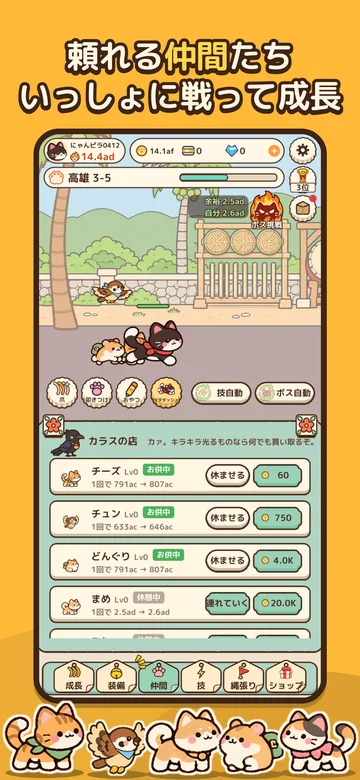
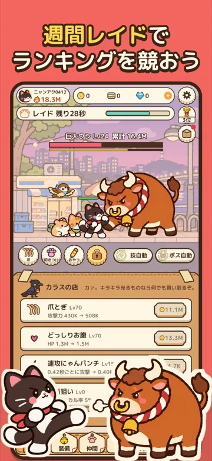
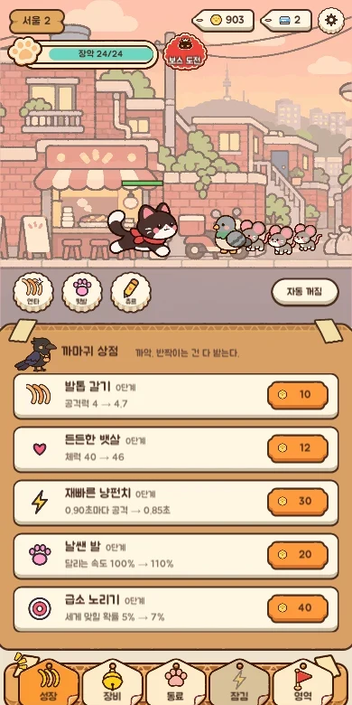

にゃんピラ育成
路地裏から世界へ！
かわいいタキシード柄の野良猫が、町をひと区画ずつ縄張りにしていきます。 路地裏の動物たちと戦ってお金を稼ぎ、カラスの店で強化しながら、ボスを倒して次の町へ進む縦画面の放置系ゲームです。
 ゲーム紹介
ゲーム紹介

この町はもらったニャ
 プラットフォーム
プラットフォーム- iOS
- ジャンル
- 放置系RPG
 状況
状況- 2026年11月13日にApp Storeで配信を開始しました。Google Play版は準備中です。お問い合わせはメールでお送りください。
 ポリシー
ポリシー- プライバシーポリシー
 数字で見る
数字で見る
- 13地域
- 390ステージ
- 10仲間
- 5スキン

近所の動物はぶっ飛ばせ！
ハトや野良犬からツキノワグマまで、韓国と台湾に実際に生息する約90種の動物が、敵やボスとして登場。ボスを自分でぶっ倒して、そのエリアを縄張りにしよう。

韓国8地域と台湾5か所、全390ステージ
地域ごとに風景も、出てくる動物も、待ちかまえるボスも違います。縄張りにした町では、ゲームを閉じている間もショバ代が最大8時間分たまります。
韓国
- ソウル
- 京畿
- 忠清
- 全羅
- 慶尚
- 釜山
- 江原
- 太白
台湾
- 台北
- 台中
- 西螺
- 台南
- 高雄
待ち受ける大将たち
- ぽっちゃり猫の親分
- タヌキのボス
- ウシガエルの大将
- ツキノワグマ
海を渡って台湾へ
太白まで韓国中を縄張りにしたら、箱の中で寝ているうちに船に積まれ、そのまま台湾へ。台北から高雄まで、その土地でいちばん強い連中にケンカを売って倒します。台湾で出会う新しい仲間5匹もスカウトして、いっしょに戦えます。
 頼れる仲間たち
頼れる仲間たち
10
韓国の5匹と台湾の5匹。猫だけではありません。3匹まで連れて歩いていっしょに戦い、休んでいる仲間をおつかいに出すと、お土産の包みを持って帰ってきます。
 チーズ飛びかかって前足で押さえこむ
チーズ飛びかかって前足で押さえこむ チュン空からくちばしで急降下
チュン空からくちばしで急降下 どんぐり戦って得るお金が増える
どんぐり戦って得るお金が増える まめ遅いけれど重い頭突き
まめ遅いけれど重い頭突き ミケ人間がくれるお金が増える
ミケ人間がくれるお金が増える ランラン爪でさらう
ランラン爪でさらう- ルル首をすくめてからツンとつつく
 ニウニウ遅いけどずっしり重いツノ突進
ニウニウ遅いけどずっしり重いツノ突進 スーフー遠くから跳んで飛びかかる
スーフー遠くから跳んで飛びかかる- ホウバナナをひょいと投げる

週間レイド
倒れない巨大ボス「巨大ウシ」を、制限時間内に思いきり叩きます。与えたダメージでその週の順位を競います。
スキン: タキシード · チーズ · ボンベイ · ノルウェージャン · ペルシャ
 ゲーム画面
ゲーム画面
4
01戦って稼いで、ボスを倒す
路地裏の動物たちと戦ってお金を稼ぎます。十分に強くなったらボスに挑み、次のステージへ進みましょう。
 02
02カラスの店で強くなる
光るものなら何でも引き取るカラスの店で、ツメや体力、装備を強化できます。
 03
03仲間を集めてショバ代を稼ぐ
縄張りにした区画にはショバ代が貯まります。仲間を派遣すれば、離れている間も効率よく集められます。
 04
04都会の路地裏から山奥まで
都会の路地裏から始まり、田舎の野原を抜けて山奥へと進みます。各地域には、それぞれ名前のあるボスが待ち受けています。
画面はアップデートで変わる場合があります。画面は韓国語版です。
動画
2- スキルまとめ
- 路地裏の人たち
字幕は韓国語です。